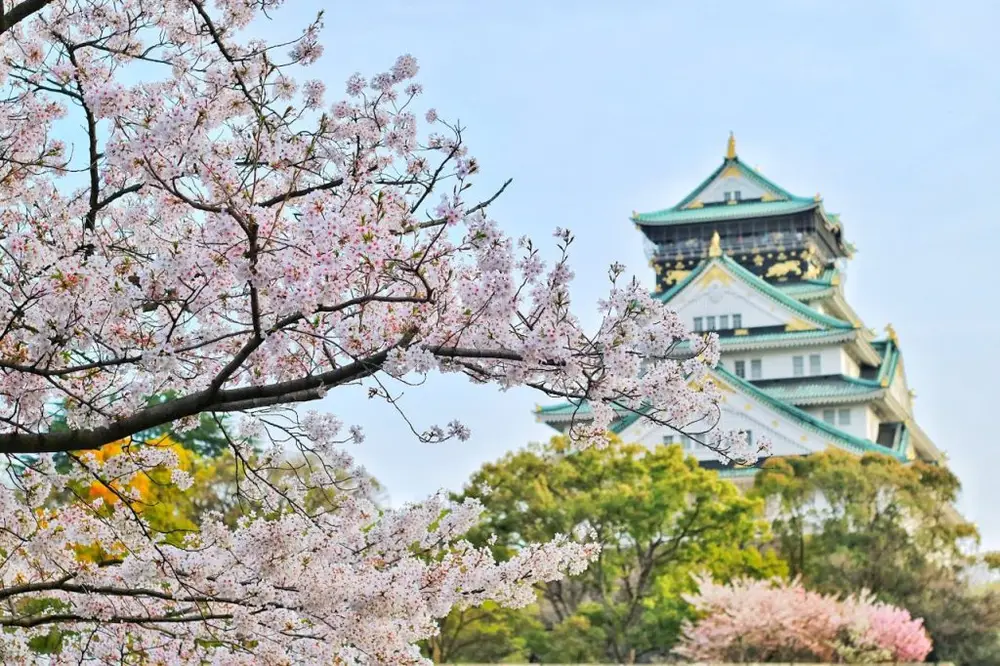
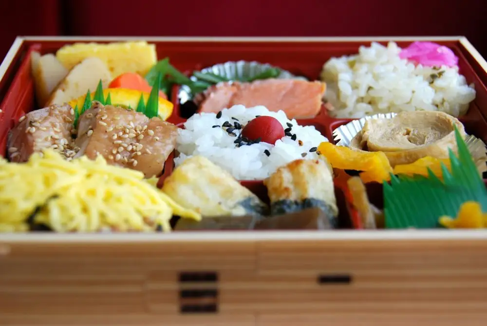

Articles / Recipes
Celebrate springtime with sakura drinks!
2024-03-05 · Recipes, Recipes

It’s time to say goodbye to the winter chill, as springtime is just round the corner! What’s better to celebrate the warm weather than some themed drinks?
These sakura-themed drinks are not only a visual spectacle, but also delicious to boot. Check it out!

Blossom Beauties!
When the clock ticks towards the end of March, Japan is blanketed by a sea of pink: with rows of blooming cherry trees in the countryside until May!
With how symbolic the cherry blossom is to the Japanese, naturally this is an important festival for them. During “Hanami”, or “Flower Viewing” festival, people crowd under the cherry trees for outdoor parties to sing, dance and frolick.
Food and drink
Of course, there’s also food and drink! During the festival, people would dig into specially-prepared “Hanami” bento, “dango” rice cakes, sake and other delicacies.
To honour the festival, people often make their snacks sakura-shaped or coloured. Complete with a patterned picnic cloth, each of them are like a tiny springtime artpiece!

Sakura drinks
Want something to wash down your meal? Sakura-themed drinks would be the perfect match!
With our cherry blossom syrup, we make this easy for you! Here’s some to get you started:

Sakura Strawberry Latte
This cute, pink latte mixes the subtle sweetness from sakura syrup with rich-flavoured fresh milk, plus a slight tangy hit from the strawberry!
What you’ll need
How to make
Pour around 300ml fresh milk into a glass
Stir in the cherry blossom syrup, add the ice cubes and shake
Blend the remaining milk with the cream top powder, then pour the foam on top of the drink. Finally, dust with strawberry powder. Enjoy!
For best results, garnish with some sakura petals!
Cherry blossom soda
Sweet and fizzy, this drink is the perfect thirst-quencher! What’s more, the sakura crystal boba adds an extra layer of flavour and crunch to the drink!
What you’ll need
How to make
Pour the soda water into a glass
Add the ice cubes, then pour in the syrup. At this point, you can either mix for a vibrant drink, or leave as is for an ombre effect!
Top up with the crystal boba, and enjoy!

Get started!
Want to celebrate springtime and add some Japanese flair and add some Japanese flair to your menu?
Pick up the ingredients to get started!